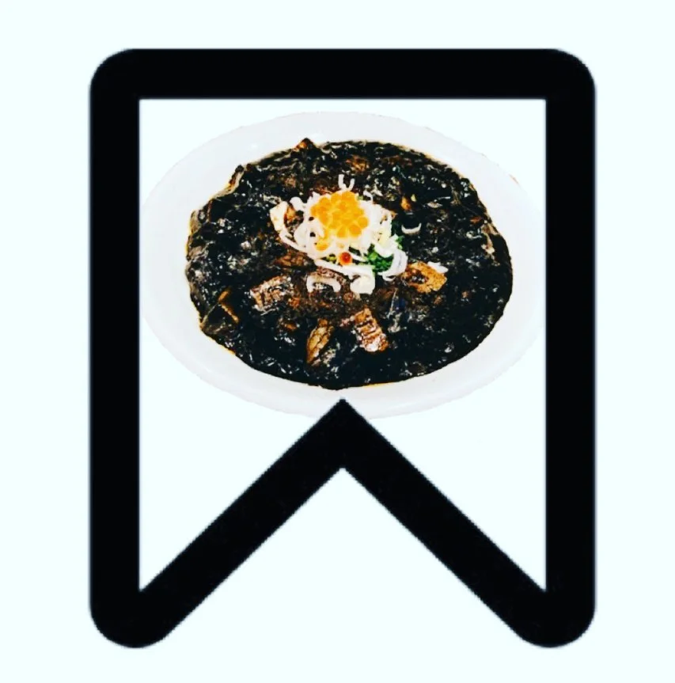
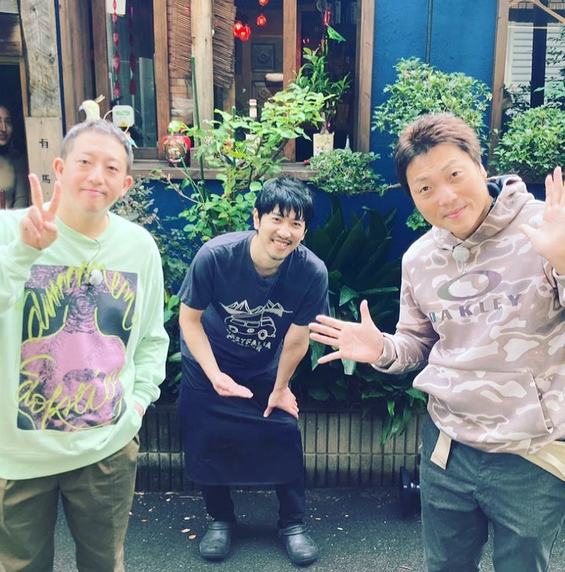

2021年1月13日
こんにちは！！こんばんは！！


こんにちは！！こんばんは！！ 緊急事態宣言の前日にテレビに出てしまいました！笑 一応、時間を守りながらゆったりと営業しておりますが、いつまでやれるかわかりません。 我慢の期間。色々な事情でご来店頂けないお客様もいらっしゃると思います。 ぜひこの投稿を保存してください！ そして、また思い出したら万全な時にご来店いただける事を、 従業員一同、心よりお待ちしております。 １日も早いコロナウイルスの終息を願っております。 店主 二見 料理長 古川 #二ヶ月放送をずらして欲しかった #今ちゃんの実は #中華バル#中華#中華料理#福島区グルメ#路地裏#B級グルメ#中国#チャイニーズ#路地裏チャイニーズ有馬#有馬#シュウマイ#餃子#点心#フォローミー#followme#パクチー